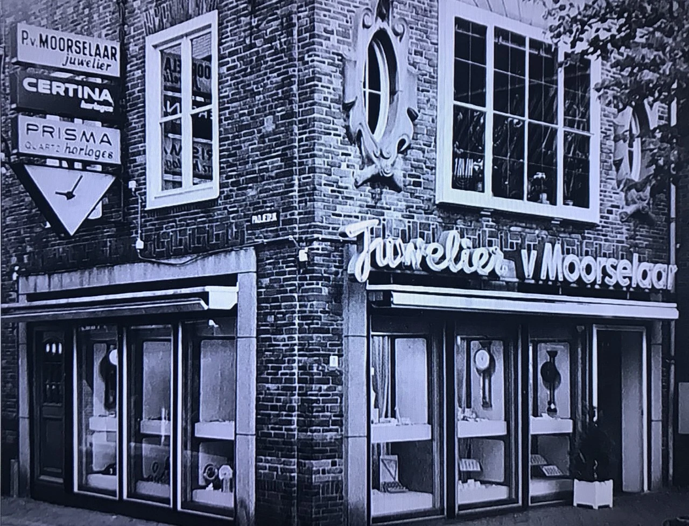
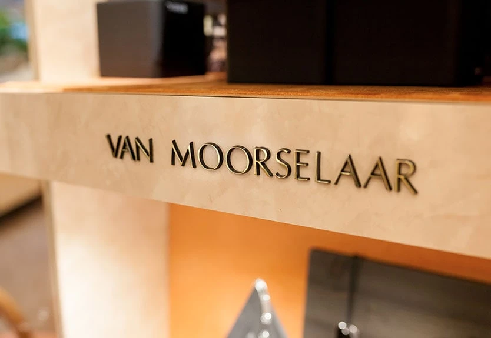
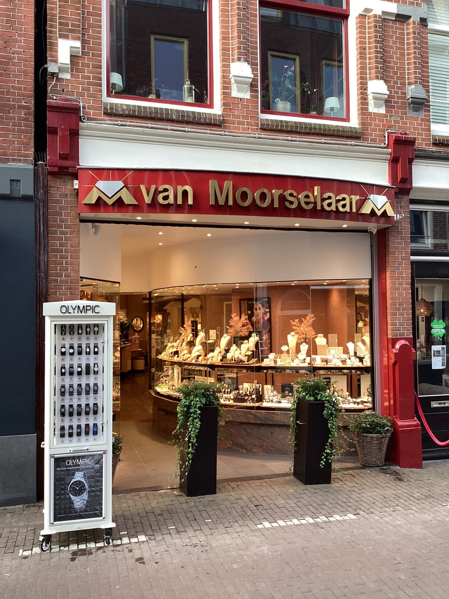
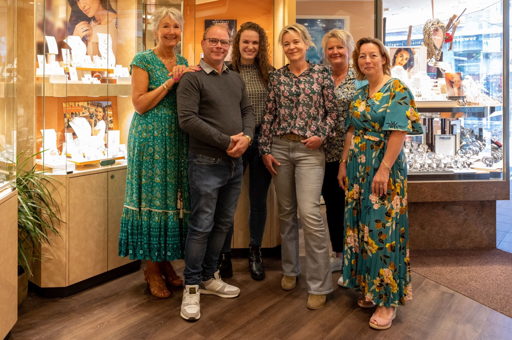

1972
Peter en Mariel starten de juwelierszaak aan de Kaasmarkt in Purmerend.


Een vertrouwd gezicht in Purmerend sinds 1972.
Welkom bij Juwelier P.J. van Moorselaar.
Al ruim 50 jaar zijn wij een vertrouwd begrip in Purmerend en omstreken. Een winkel waar mensen graag komen, mede dankzij een fantastisch team van medewerkers, de humor en de fijne sfeer.
Wij zijn een moderne winkel waarbij traditionele waarden zoals waardering voor de klant, serviceverlening en vertrouwen op nummer één staan.
Peter en Mariel starten de juwelierszaak aan de Kaasmarkt in Purmerend.

Verhuizing naar het Padjedijk, waar de winkel tot op de dag van vandaag gevestigd is.

Meer dan 50 jaar ervaring en nog altijd een begrip in de regio.

Ons team bestaat uit gewaardeerde medewerkers die u graag van goed advies voorzien. Een ontspannen sfeer en gezelligheid zijn voor ons van groot belang.
Ons doel is dat iedere klant zich op zijn gemak voelt, vrijblijvend kan rondkijken en deskundig advies krijgt, eventueel onder het genot van een kopje koffie.

Uw goud- en zilverreparaties, horloges en klokken worden grotendeels in eigen atelier gerepareerd.
Daarnaast maken en vermaken wij sieraden tot unieke stukken met een eigen verhaal. Denk bijvoorbeeld aan:
Met zorg en passie stellen wij onze collecties samen tijdens nationale en internationale beurzen. Altijd onderscheidend, altijd uniek.